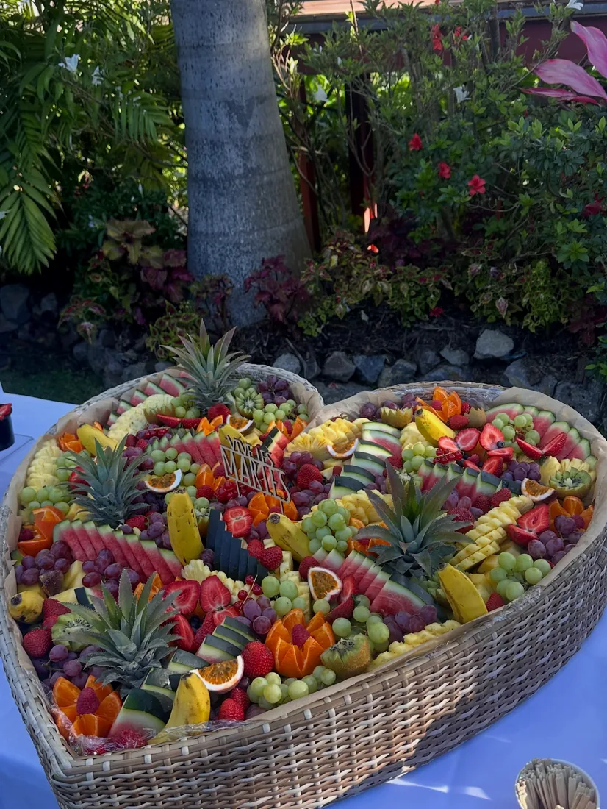
La corbeille en cœur
Pastèque, ananas, raisins, fruits de la passion, fraises et oranges ciselées : la grande pièce qui attire tous les regards.
« Nous vous confectionnons le plus beau et le plus chic des “Bar à Fruits” » 🥝🍉🥭🍍 Votre traiteur fruité pour les mariages, les vins d'honneur et tous vos événements.
Hello les Fruits Lovers !
Chez Ô Délices des Fruits, chaque événement devient une table généreuse et colorée : ananas en couronne, fraises en éventail, kiwis, raisins, mangues et oranges taillées, jus servis en fontaine. Des compositions préparées « avec des fruits que nous cultivons pour certains, choisis avec le cœur et préparés avec amour » 🧡
Le plus beau et le plus chic des bars à fruits, pour vos plus beaux jours.
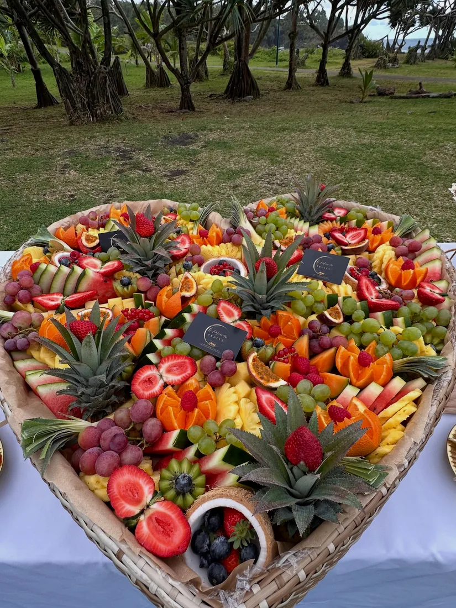
Le cœur de fruits signature · août 2026La carte des douceurs
Des fruits de saison et de qualité, dressés dans un joli cadre pour un buffet aussi beau que gourmand.

Pastèque, ananas, raisins, fruits de la passion, fraises et oranges ciselées : la grande pièce qui attire tous les regards.
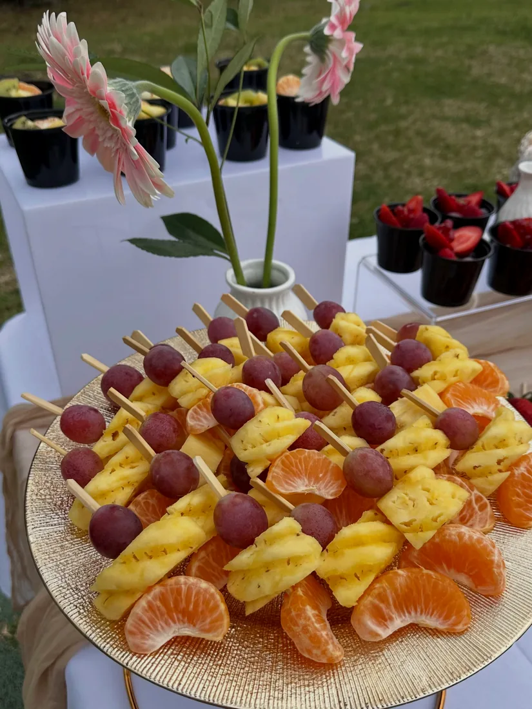
Ananas et raisin, fraises et myrtilles, sur plateaux dorés : faciles à picorer, parfaites pour un vin d'honneur ou un apéro.
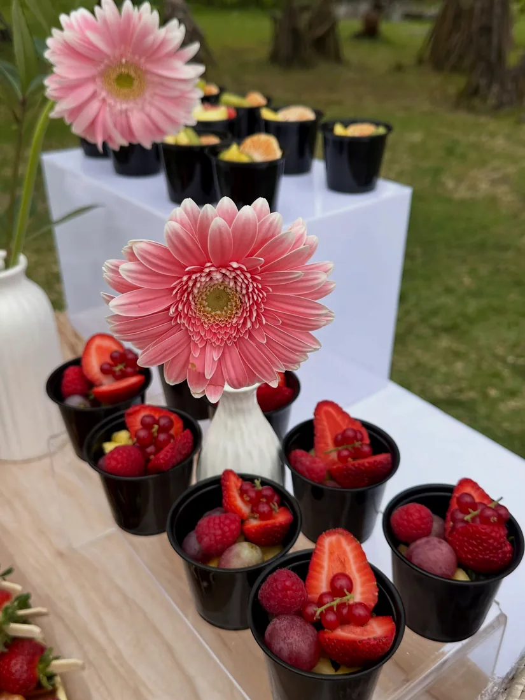
Fraises et fruits rouges, kiwi et melon en billes : de petites portions élégantes, prêtes à servir.
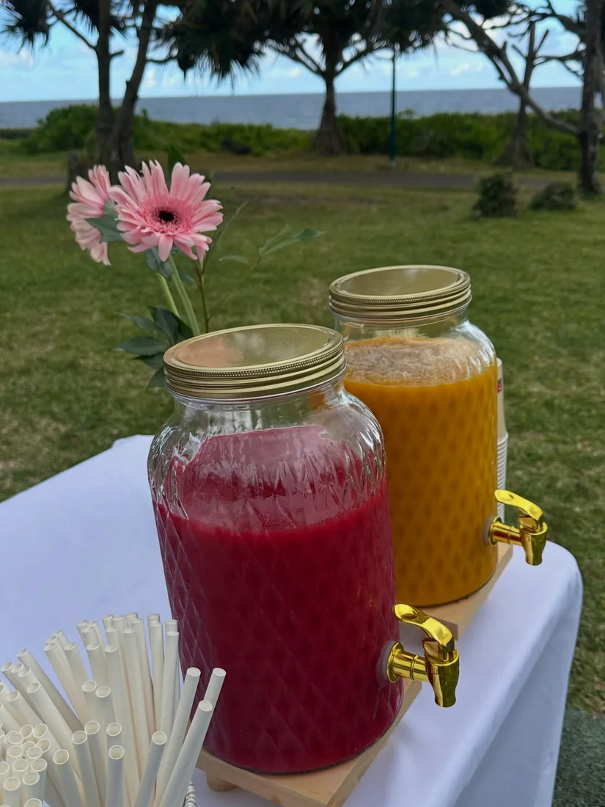
Boissons fraîches maison en fontaines à robinet doré : jus de fruits frais, Virgin Mojito, infusion et citronnade.
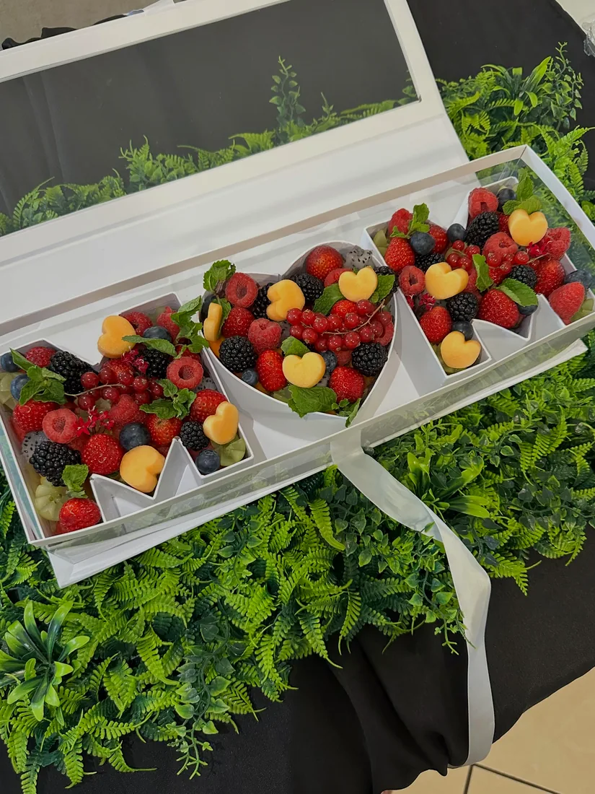
Lettres garnies de fraises, framboises, mûres et petits cœurs de melon, sous un joli ruban : l'édition fête des mères 2026.
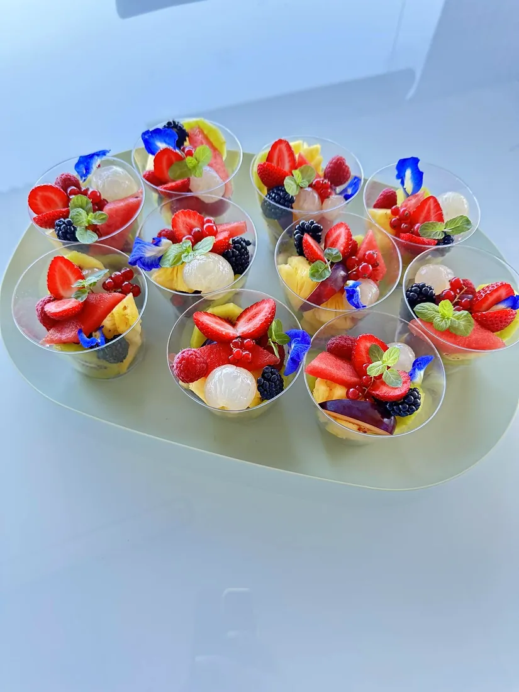
Fraises, litchis, ananas, mûres, menthe fraîche et fleurs bleues : un plateau qui donne envie de tout goûter.
Ils ont partagé un moment fruité
Une note sucrée pour l'apéro : fruits, mocktails et le bar à Mojito qui « fait le bonheur de chacun ».
Une pause fraîcheur le 8 mai, puis un bar à fruits pour la venue d'investisseurs indiens à La Réunion.
« De la couleur, de l'amour, des fruits de saison et de qualité. »
« Le partenaire fruité de vos événements professionnels, familiaux, amicaux ou juste pour le plaisir ! »
Le bar à fruits et le bar à jus tenus pour la municipalité.
Encore un beau mariage à Saint-Pierre : bar à fruits et boissons fraîches sous les palmiers.
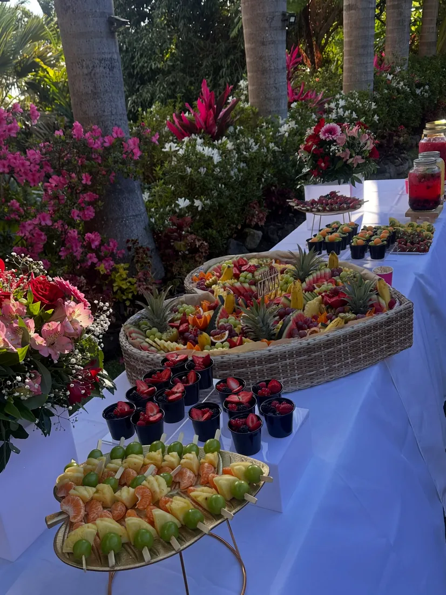
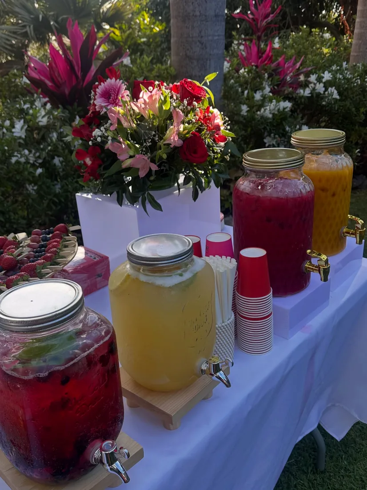
La galerie
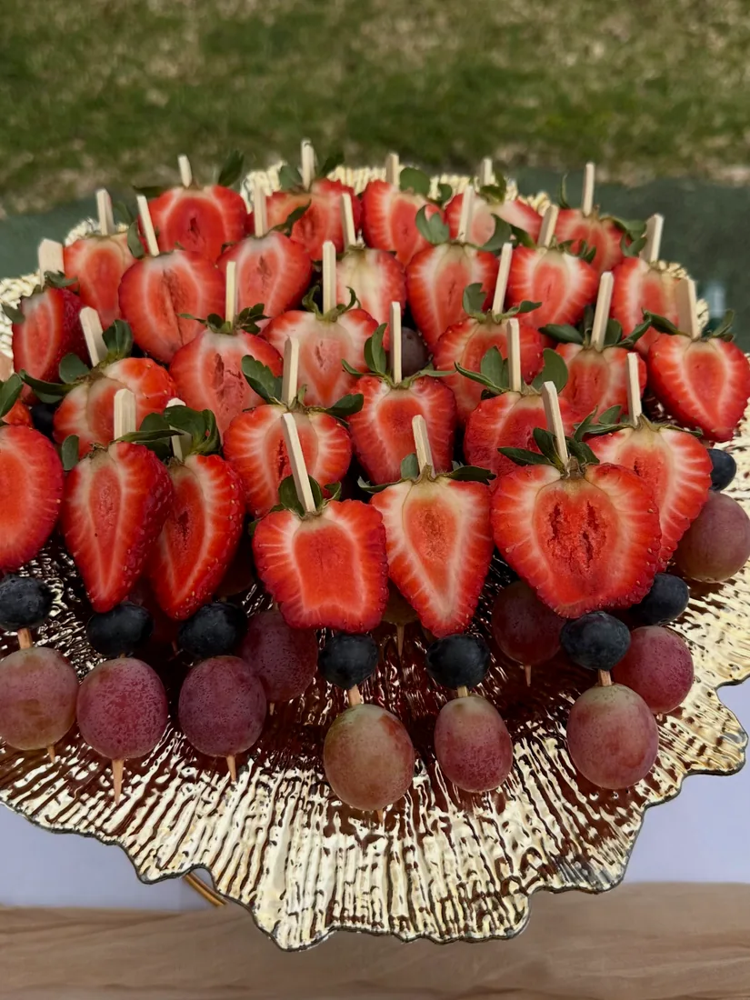
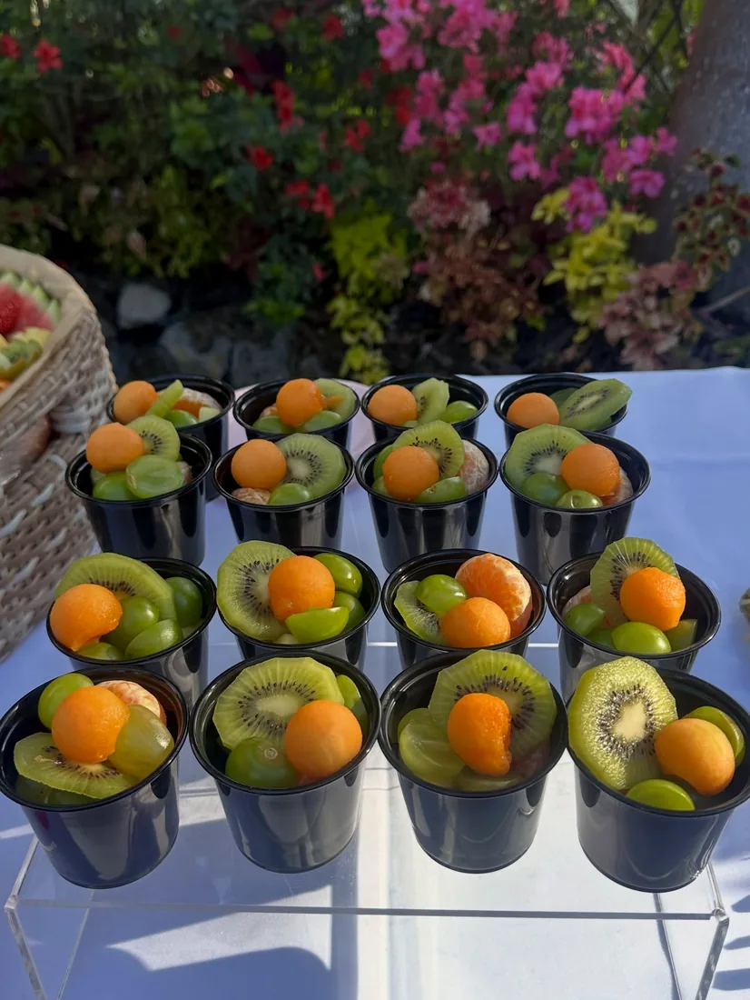
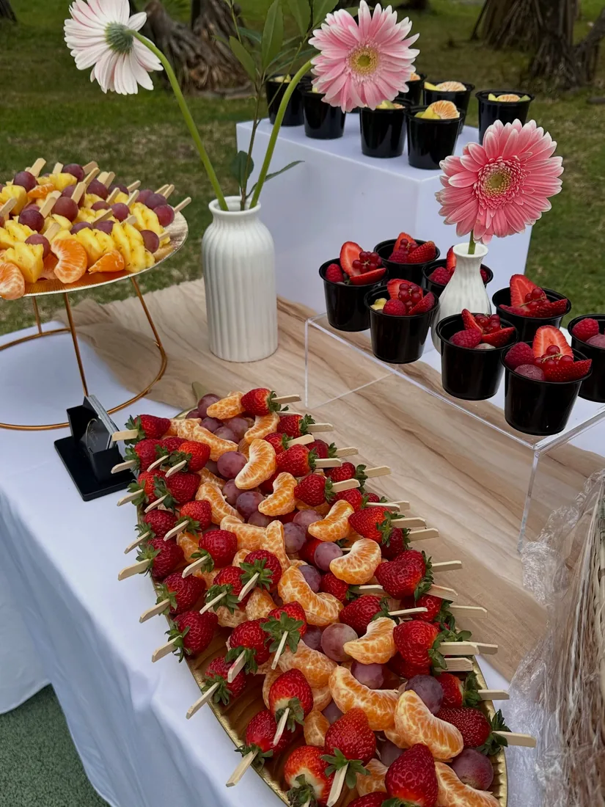
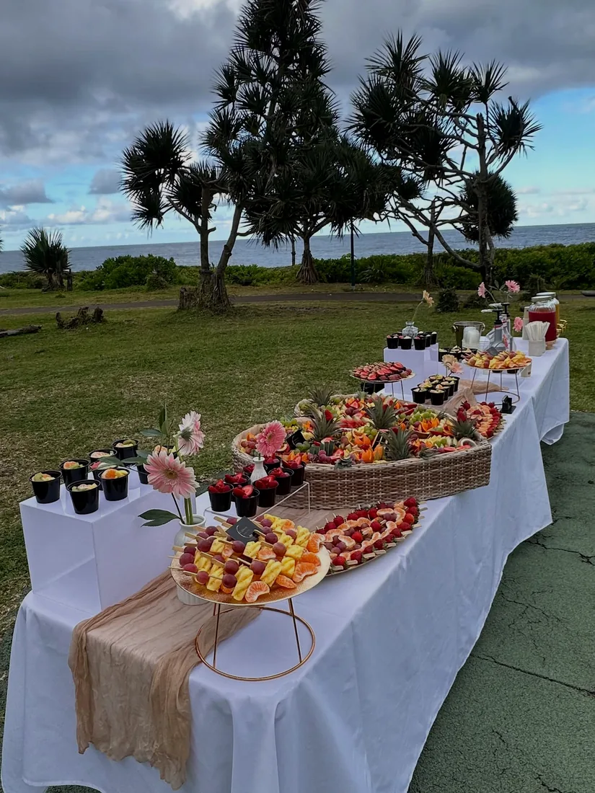
Faites défiler ⟶
« Un plateau bien garni avec des fruits du jour et joliment décoré. Beaucoup de Goûts et de Fraîcheur. »Avis publié sur la page Facebook d'Ô Délices des Fruits · recommandé à 100 %
Les fêtes, version fruitée ✦
Une table de fête qui brille de fruits frais : Ô Délices des Fruits a déjà signé son premier Noël d'entreprise avec un bar à fruits mobile. Une belle façon de remercier les équipes ou de régaler la famille, en légèreté.
Commandes en message ou au 0693 33 20 30 : on compose ensemble votre table des fêtes.
On prépare votre événement ?
Commandes en message, par mail ou au téléphone. Racontez la date, le lieu et le nombre d'invités : Ô Délices des Fruits compose la table qui vous ressemble.